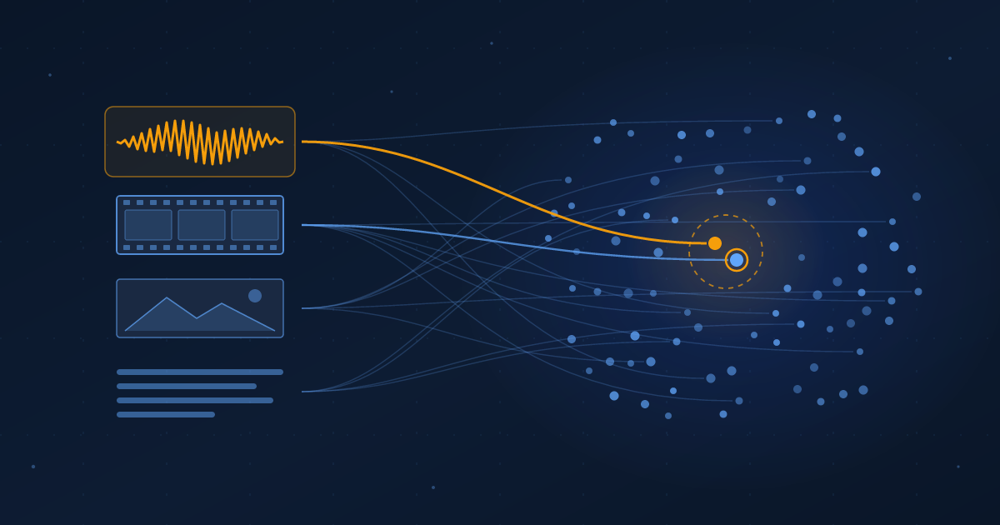

One Space for Everything
EmbeddingGemma 2 puts voice, video, images and text on one map small enough for a phone, so you can find a moment by asking for it.
Ibrahim AbuAlhaol, PhD, P.Eng., SMIEEE
AI Technical Lead
I forget a lot of things, and I think that is fine. What is not fine is the amount of information we have to consume.
Last week, on October 6, Google released EmbeddingGemma 2 [1]. It is a model that can help you find a video clip from a spoken description, search hours of audio recordings with a typed question, or find a picture by showing it another picture. It has 740 million parameters, runs on your own device, and is available under the Apache 2.0 license. That is a useful set of abilities for something this small.
Here is why it got me excited. Imagine a pile of badly named videos on your computer. You record a voice memo asking for one specific moment, and a search app built on this model brings back the clip. Google uses almost exactly this example [1]. I don't know about you, but to me that sounds a little magical. And I can feel how well it fits my own memory, and my agents' memory too.
My memory was never in the filenames
Look at how a personal archive is actually labeled. VID_20250612_1833.mp4. Recording 47.m4a. IMG_8812.jpg. The camera picked those names, not me. I record more than ever: meetings, whiteboards, talks, voice notes on a walk. I go back to almost none of it, because the only handle a search box has is the filename, and the filename says nothing about what happened.
So most of what I record is write-only memory. It is stored, and it is never retrieved. The usual fix is discipline: rename files, tag photos, write a summary after each meeting. I have tried. It lasts about two weeks. The labeling step is exactly the step a person with too much to consume will skip.
One space for everything
The technology underneath is called an embedding. An embedding model reads a piece of content and turns it into a list of numbers, which you can think of as coordinates on a very large map. The model is trained so that things with similar meaning land close together. Search then becomes simple geometry: turn the question into a point, and return whatever sits nearest to it.
Text embeddings have been around for years. In 2021, OpenAI's CLIP showed that pictures and captions could share one map [4], and in 2023 Meta's ImageBind pushed the idea to six kinds of data [5]. EmbeddingGemma 2 puts text, code, images, video and audio on one map of 768 numbers per item [3], in a model small enough for a phone. Its text-only predecessor, released in 2025, was built for exactly that kind of device [7].
Search used to match what I typed against what I named. A shared space matches what I mean against what I recorded. The naming step, the one I always skip, is no longer needed.
What about a rough sketch? A photo of a sketch is just another image, so it can query the library the same way a photo does, and Google demonstrates image-to-image search in its gallery app [1]. Google has not published results for hand-drawn sketches, though. Treat sketch search as something to test on your own collection, not a promise.
Small enough to stay home
For personal memory, where the model runs matters as much as what it does. My voice memos and family videos are not things I want to upload so that a cloud service can index them. EmbeddingGemma 2 is built to run on the device that already holds the files.
The model is modular. The text part is 270 million parameters, a vision encoder adds 170 million, and an audio encoder adds 300 million [2]. You load only what you need, and all four configurations write to the same map, so a phone running the small text-only version can query an index the full model built on a laptop overnight. Google measured about 191 MB of memory for the quantized text-only model and about 567 MB for the full multimodal one on a Pixel 11 Pro [1]. The Apache 2.0 license means no per-query fee and no permission to ask.
One practical detail shapes how you build with it. Each embedding has a budget of 8,192 tokens, roughly 29 images, 58 video frames, or about five and a half minutes of audio [3]. Video is sampled at one frame per second by default, so a long recording gets cut into windows of about a minute, and each window becomes its own point on the map. That is the reason search can return a moment and not just a file.
Shrinking the map has a price
Storage is the other half of running locally. Each item is 768 numbers by default, and the model is trained with Matryoshka representation learning [6], which packs the most important information into the first numbers. You can keep only the first 512, 256 or 128 of them. A million vectors take about 1.5 GB at full size and about 250 MB at 128 [2].
The model card shows that the saving is not free, and that the cost depends on the format [3].
Text barely notices the cut. Pictures and sound do. For a personal archive that is mostly video and voice, 256 numbers is the sensible default: it keeps at least 95% of the quality on every task at a third of the storage. Use 128 only for text, and only after checking it on your own data.
The same index serves my agents
I wrote before about the cost of an agent relearning what another agent already solved. Most agent memory today is text: notes, logs, transcripts. That leaves out a lot of what actually happened, such as the screenshot of the error, the diagram on the whiteboard, or the five minutes of a call where the decision was made.
A shared space lets an agent store those as they are and find them with the same question it would use for a note. EmbeddingGemma 2 also shares its text tokenizer and audio encoder with Gemma 4, so a small local assistant can run both models together for less memory than two separate ones [1]. The embedding model finds. The language model reads what was found and reasons about it.
Where it falls short
The benchmark numbers come from Google, and they are good rather than perfect. The video retrieval score is 50.67 on MMEB v2 [3], which means plenty of misses on hard queries. The model card also warns that subtle nuance, sarcasm and figurative language remain hard, and that quality varies across its 100+ languages [3]. Its training data stops in January 2025. For a personal archive the bar is lower than that: finding the thing at all.
I will keep forgetting. What I need is a cheaper way back to what I already recorded. A free model that fits on a phone and understands the formats I actually record in makes that way back very cheap.
What excites me most is that one index can serve both of us. The map that lets me find a moment with a voice memo is the same map that lets my agent find it with a sentence. Personal memory and agent memory stop being two projects.
What leaders should do
- Pick one archive your people already struggle to search, such as recorded meetings, field photos or support calls, and pilot a local multimodal index on it. Measure the time to find a known item before and after.
- Keep sensitive media on the device. Prefer embedding models you can run locally under a permissive license, so recordings never leave the machine to become searchable.
- Test on your own content before trusting the benchmarks. Write 30 questions with known answers, including spoken questions and sketch queries, and check how often the right item lands in the top three at 768 and at 256 numbers.
- Store mixed media at 256 numbers by default, and cut long video and audio into one-minute windows, so results point to the moment and not just the file.
Related Articles
References & Extended Literature
- Google. (2026, October 6). "EmbeddingGemma 2 is a best-in-class open model for natively multimodal embeddings." The Keyword, Google Blog. https://blog.google/innovation-and-ai/technology/developers-tools/embeddinggemma-2/
- Google for Developers. (2026). "EmbeddingGemma 2: The Developer Guide." Google Developers Blog. https://developers.googleblog.com/embeddinggemma-2-the-developer-guide/
- Google DeepMind. (2026). "google/embeddinggemma-2" model card (architecture, input limits, benchmark and truncation tables, limitations). Hugging Face. https://huggingface.co/google/embeddinggemma-2
- Radford, A., Kim, J. W., Hallacy, C., et al. (2021). "Learning Transferable Visual Models From Natural Language Supervision" (CLIP). ICML 2021. https://arxiv.org/abs/2103.00020
- Girdhar, R., El-Nouby, A., Liu, Z., et al. (2023). "ImageBind: One Embedding Space To Bind Them All." CVPR 2023. https://arxiv.org/abs/2305.05665
- Kusupati, A., Bhatt, G., Rege, A., et al. (2022). "Matryoshka Representation Learning." NeurIPS 2022. https://arxiv.org/abs/2205.13147
- Schechter Vera, H., et al. (2025). "EmbeddingGemma: Powerful and Lightweight Text Representations." arXiv:2509.20354. https://arxiv.org/abs/2509.20354